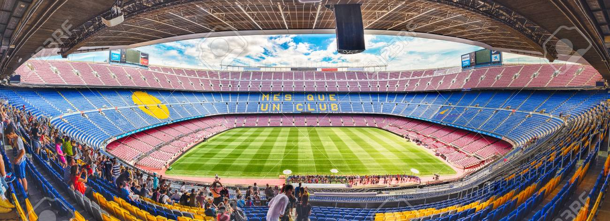
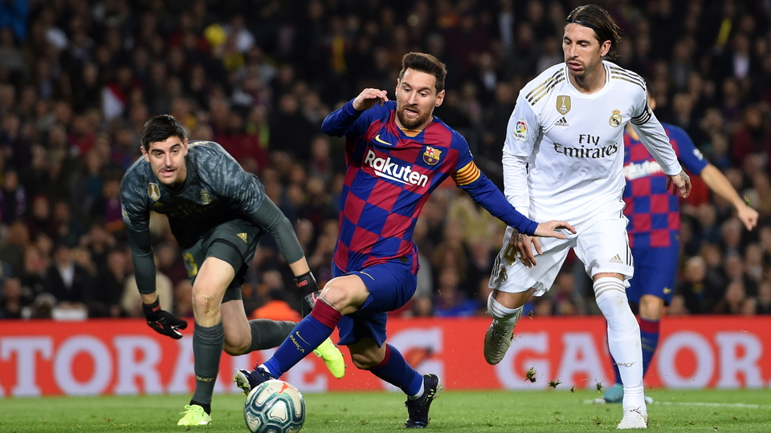
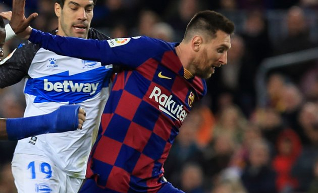

Camp Nou este stadionul Barcelonei din anul 1957, acesta fiind la ora actuala cel mai mare stadion din Europa, cu peste 99 000 de locuri. Stadionul a fost modernizat in urma anului 2018, dupa ce s-au investit peste 100 de milioane de euro pentru a reface sectorul NORD
al fanilor catalani. "Camp Nou" provine din limba catalana si semnifica "teren nou".
Marele El Clasico
"El Clasico" reprezinta cel mai mare derby de Europa intre cele mai mari forte spaniole, cat si europene care au existat vreodata.Faptul ca locatarii provin din doua regiuni istorice ale Spaniei, proiecteaza o inversunare mai mare intre fani(Castilia si Catalunya), cea din urma, recent, incercand sa obtina independenta fata de Spania.
Rivalitatea cu Espanyol
Espanyol Barcelona este celalalt club care concureaza in LaLiga, fiind un club mult mai mic decat Barcelona. Insa, faptul ca rivalitatea intre fani este imensa, meciurile intre aceste cluburi sunt facute din ce in ce mai frumoase si mai competitive, jucatorilor de la Espanyol oferindu-se un boost motivational.